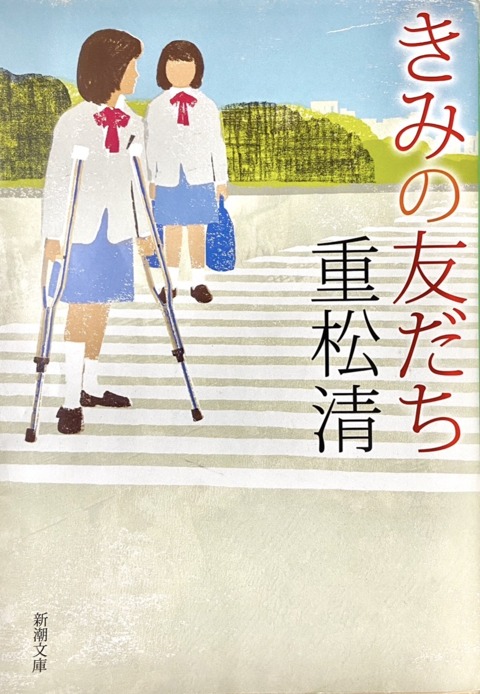

中学生の頃、何度も読み返していた小説です。
一見するとただの友情物語ですが、章ごとに視点人物が変わることで、それぞれの悩みや感情が丁寧に浮かび上がっていきます。
自分とは性格の異なる登場人物たちの心情に触れることで、まるで知らなかった誰かの内面を覗いているような感覚がありました。
人を先入観だけで判断し、心の壁を作ってしまうことのもったいなさを、この作品から学んだように思います。
この物語を通して得た価値観は、今でも私の人間関係の考え方に影響を与えています。
著者：重松清
出版社：新潮文庫 出版年：2008年

中学生の頃、何度も読み返していた小説です。
一見するとただの友情物語ですが、章ごとに視点人物が変わることで、それぞれの悩みや感情が丁寧に浮かび上がっていきます。
自分とは性格の異なる登場人物たちの心情に触れることで、まるで知らなかった誰かの内面を覗いているような感覚がありました。
人を先入観だけで判断し、心の壁を作ってしまうことのもったいなさを、この作品から学んだように思います。
この物語を通して得た価値観は、今でも私の人間関係の考え方に影響を与えています。